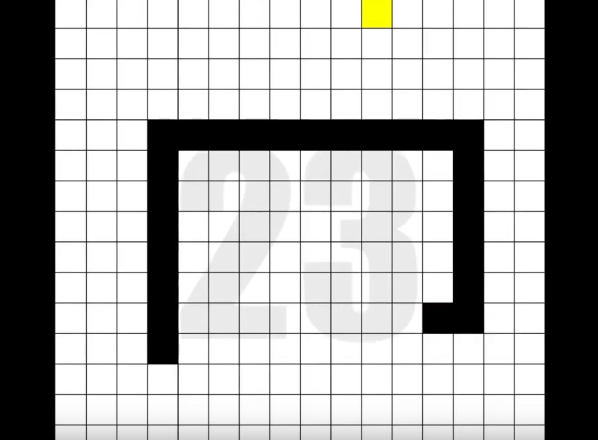

One of the significant strengths of using the Processing environment is that it very quickly lets us create interactive systems. In this chapter, we’ll define the essential elements of such systems, and present the Processing functions that facilitate their use.

Level 23 of the interactive game, Snake